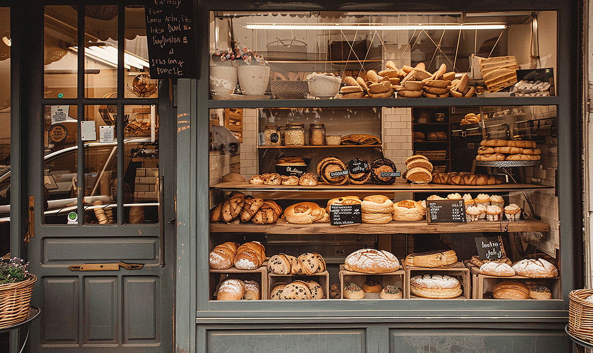

Guided by craft and community
Bread Brings People Together
North Star Bakery started with loaves shared around a family table. It grew into a neighborhood bakery shaped by patient fermentation, skilled hands, and the people who visit us every day.

How We Bake
We mix in small batches, give our dough the time it needs, and shape each loaf by hand. Whenever possible, we choose seasonal ingredients and work with nearby producers so our food reflects the place we call home.
A Place to Gather
We want the bakery to feel like a warm light in the neighborhood: a place to pick up a daily loaf, celebrate a milestone, and connect over something delicious. We welcome questions, special requests, and ideas for how we can continue serving our community.